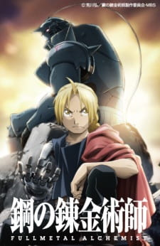

Animes Populares

| Nome do Anime: | Naruto |
|---|---|
| Número de Episódios: | 220 |
| Gêneros: | Ação, Aventura, Comédia |
| Status: | Completo |
| Nota MAL: | 7,96 |
| Lançamento: | Outono de 2002 |
| Sinopse: |
Momentos antes do nascimento de Naruto Uzumaki, um enorme demônio conhecido como Kyuubi, a Raposa de Nove Caudas, atacou Konohagakure, a Vila Oculta da Folha, e causou estragos. A fim de pôr fim à fúria da Kyuubi, o líder da vila, o Quarto Hokage, sacrificou sua vida e selou a besta monstruosa dentro do recém-nascido Naruto. Agora, Naruto é um ninja hiperativo e cabeça-dura que ainda vive em Konohagakure. Evitado por causa da Kyuubi dentro dele, Naruto luta para encontrar seu lugar na vila, enquanto seu desejo ardente de se tornar o Hokage de Konohagakure o leva não apenas a alguns grandes novos amigos, mas também a alguns inimigos mortais. |

| Nome do Anime: | Naruto: Shippuuden |
|---|---|
| Número de Episódios: | 500 |
| Gêneros: | Ação, Aventura, Comédia |
| Status: | Completo |
| Nota MAL: | 8,23 |
| Lançamento: | Inverno 2007 |
| Sinopse: |
Já se passaram dois anos e meio desde que Naruto Uzumaki deixou Konohagakure, a Vila Oculta da Folha, para treinamento intenso após eventos que alimentaram seu desejo de ser mais forte. Agora a Akatsuki, a misteriosa organização de ninjas desonestos de elite, está se aproximando de seu grande plano que pode ameaçar a segurança de todo o mundo shinobi. Embora Naruto seja mais velho e eventos sinistros surjam no horizonte, ele mudou pouco em personalidade - ainda indisciplinado e infantil - embora agora esteja muito mais confiante e possua uma determinação ainda maior para proteger seus amigos e sua casa. Aconteça o que acontecer, Naruto seguirá lutando pelo que é importante para ele, mesmo às custas de seu próprio corpo, na continuação da saga sobre o menino que deseja se tornar Hokage. |

| Nome do Anime: | One Piece |
|---|---|
| Número de Episódios: | 1012+ |
| Gêneros: | Ação, Aventura, Comédia, Drama, Fantasia |
| Status: | Em Lançamento |
| Nota MAL: | 8,62 |
| Lançamento: | Outono de 1999 |
| Sinopse: |
Gol D. Roger era conhecido como o "Rei dos Piratas", o ser mais forte e mais infame que navegou na Grand Line. A captura e execução de Roger pelo Governo Mundial trouxe uma mudança em todo o mundo. Suas últimas palavras antes de sua morte revelaram a existência do maior tesouro do mundo, One Piece. Foi essa revelação que trouxe a Grande Era dos Piratas, homens que sonhavam em encontrar One Piece - que promete uma quantidade ilimitada de riqueza e fama - e possivelmente o auge da glória e o título de Rei dos Piratas. Entra Monkey D. Luffy, um garoto de 17 anos que desafia sua definição padrão de pirata. Em vez da persona popular de um pirata perverso, endurecido e desdentado saqueando aldeias por diversão, a razão de Luffy ser um pirata é pura maravilha: o pensamento de uma aventura emocionante que o leva a pessoas intrigantes e, finalmente, ao tesouro prometido. Seguindo os passos de seu herói de infância, Luffy e sua tripulação viajam pela Grand Line, vivenciando aventuras loucas, desvendando mistérios sombrios e lutando contra inimigos fortes, tudo para alcançar a mais cobiçada de todas as fortunas – One Piece. |

| Nome do Anime: | Dragon Ball |
|---|---|
| Número de Episódios: | 153 |
| Gêneros: | Aventura, Comédia, Fantasia |
| Status: | Completo |
| Nota MAL: | 7,96 |
| Lançamento: | Inverno de 1986 |
| Sinopse: |
Gokuu Son é um garoto que vive sozinho na floresta - isto é, até que uma garota chamada Bulma o encontra em sua busca por um conjunto de objetos mágicos chamados "Dragon Balls". Como dizem que os artefatos concedem um desejo a quem coletar todos os sete, Bulma espera reuni-los e desejar um namorado perfeito. Gokuu está de posse de uma esfera do dragão, mas infelizmente para Bulma, ele se recusa a se separar dela, então ela faz um acordo com ele: ele pode acompanhá-la em sua jornada se ele a deixar emprestar o poder da esfera do dragão. Com isso, os dois partiram na jornada de uma vida. Eles não vão na jornada sozinhos. No caminho, eles encontram o velho Muten-Roshi e aspirante a discípulo Kuririn, com quem Gokuu treina para se tornar um artista marcial mais forte para o próximo Torneio Mundial de Artes Marciais. No entanto, nem tudo é diversão e jogos; a capacidade de realizar qualquer desejo é poderosa, e há outras que fariam muito pior do que apenas desejar um namorado. Para impedir aqueles que tentam abusar do poder lendário, eles treinam para se tornarem lutadores mais fortes, usando sua força recém-descoberta para ajudar as pessoas ao seu redor ao longo do caminho. |

| Nome do Anime: | Shingeki no Kyojin (Attack on Titan) |
|---|---|
| Número de Episódios: | 25 |
| Gêneros: | Ação, Drama, Fantasia, Mistério |
| Status: | Completo |
| Nota MAL: | 8,52 |
| Lançamento: | Primavera 2013 |
| Sinopse: |
Séculos atrás, a humanidade foi massacrada até quase a extinção por monstruosas criaturas humanóides chamadas Titãs, forçando os humanos a se esconderem com medo atrás de enormes paredes concêntricas. O que torna esses gigantes realmente aterrorizantes é que seu gosto pela carne humana não nasce da fome, mas do que parece ser do prazer. Para garantir sua sobrevivência, os remanescentes da humanidade começaram a viver dentro de barreiras defensivas, resultando em cem anos sem um único encontro de titãs. No entanto, essa calma frágil logo é quebrada quando um titã colossal consegue romper a parede externa supostamente inexpugnável, reacendendo a luta pela sobrevivência contra as abominações antropófagas. Depois de testemunhar uma terrível perda pessoal nas mãos das criaturas invasoras, Eren Yeager dedica sua vida à sua erradicação, alistando-se no Survey Corps, uma unidade militar de elite que combate os impiedosos humanóides fora da proteção das muralhas. Eren, sua irmã adotiva Mikasa Ackerman e seu amigo de infância Armin Arlert se juntam à guerra brutal contra os Titãs e correm para descobrir uma maneira de derrotá-los antes que as últimas paredes sejam quebradas. |

| Nome do Anime: | Fullmetal Alchemist: Brotherhood |
|---|---|
| Número de Episódios: | 64 |
| Gêneros: | Ação, Aventura, Comédia, Drama, Fantasia |
| Status: | Completo |
| Nota MAL: | 9,15 |
| Lançamento: | Primavera de 1009 |
| Sinopse: |
Depois que um horrível experimento de alquimia dá errado na casa dos Elric, os irmãos Edward e Alphonse são deixados em uma nova realidade catastrófica. Ignorando o princípio alquímico que proíbe a transmutação humana, os meninos tentaram trazer sua mãe recentemente falecida de volta à vida. Em vez disso, eles sofreram uma perda pessoal brutal: o corpo de Alphonse se desintegrou enquanto Edward perdeu uma perna e depois sacrificou um braço para manter a alma de Alphonse no reino físico, ligando-a a uma armadura pesada. Os irmãos são resgatados por sua vizinha Pinako Rockbell e sua neta Winry. Conhecido como um prodígio da engenharia biomecânica, Winry cria membros protéticos para Edward utilizando "automail", um metal resistente e versátil usado em robôs e armaduras de combate. Após anos de treinamento, os irmãos Elric partiram em uma missão para restaurar seus corpos localizando a Pedra Filosofal - uma poderosa gema que permite que um alquimista desafie as leis tradicionais da Troca Equivalente. Enquanto Edward se torna um alquimista infame e ganha o apelido de "Fullmetal", a jornada dos meninos os envolve em uma conspiração crescente que ameaça o destino do mundo. |

| Nome do Anime: | Boku no Hero Academia |
|---|---|
| Número de Episódios: | 13 |
| Gêneros: | Ação, Comédia |
| Status: | Completo |
| Nota MAL: | 7,96 |
| Lançamento: | Primavera 2016 |
| Sinopse: |
O aparecimento de "peculiaridades", superpoderes recém-descobertos, tem aumentado constantemente ao longo dos anos, com 80% da humanidade possuindo várias habilidades, desde a manipulação de elementos até a mudança de forma. Isso deixa o resto do mundo completamente impotente, e Izuku Midoriya é um desses indivíduos. Desde criança, o ambicioso estudante do ensino médio não queria nada mais do que ser um herói. O destino injusto de Izuku o deixa admirando heróis e tomando notas sobre eles sempre que pode. Mas parece que sua persistência deu alguns frutos: Izuku conhece o herói número um e seu ídolo pessoal, All Might. A peculiaridade de All Might é uma habilidade única que pode ser herdada, e ele escolheu Izuku para ser seu sucessor! Passando por muitos meses de treinamento exaustivo, Izuku se matricula na UA High, uma prestigiosa escola secundária famosa por seu excelente programa de treinamento de heróis, e os calouros deste ano parecem especialmente promissores. Com seus colegas de classe bizarros, mas talentosos e a ameaça iminente de uma organização vilã, Izuku logo aprenderá o que realmente significa ser um herói. |